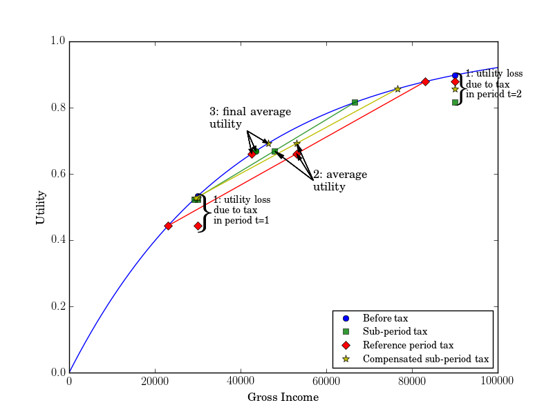

Economics of Taxation, Fiscal Microsimulation, Data Science
| 2011 | 2013 | |
|---|---|---|
| Children # | ||
| 1 | 67776 | 62624 |
| 2 | 79000 | 68028 |
| 3 | 101391 | 79238 |
| 4 | 123866 | 90302 |
| 5 | 145307 | 101424 |
| 6 | 159450 | 112324 |
$$\begin{align*} \Delta y_i &= \beta_0 + \sum_{i=1}^{6} {\beta_i \text{Children}_i} + \sum_{j=1}^{6} {{}_{b}\delta_i \text{Between}_i} + \sum_{i=1}^{6} {{}_{o}\delta_i \text{Over}_j} \\ &+ \sum_{i=1}^6 {{}_{b}\gamma_{i} \text{Children}_i \times \text{Between}_i} \\ &+ \sum_{i=1}^6 {{}_{o}\gamma_{i} \text{Children}_i \times \text{Over}_i} \\ & + \epsilon_i \end{align*}$$
\(\Delta y_i \), the endogenous variable, is the change in taxable income before the reform (in 2011) and after the reform (in 2014).
\(Over_i\) is the dummy indicator for being over the income threshold where the fiscal advantage is saturating the 2011 ceiling constraint per i children (e.g 6777 euros for 1 child families). \(Between_i\) the one for being between 2011 and 2013 thresholds. \(\text{Children}_i\) the dummy indicator for i number of children.
Under the classical assumption underlying the classical diff-in-diff literature, \(\beta_0\) captures the general trend in the population, \( \beta_i \) the average difference in trend based on the number of children in the household, \( {}_{b}\delta_i \) and \( {}_{o}\delta_i \) captures the effect of being between or over the tresholds.
We find evidence of large income effect on that population, contrary to cross-sectional analysis of elasticities, or to income tax reforms that concern the top 1% of the income distribution. It is very likely that these large income effects are due to habits formation, meaning that households do not accept to diminish their standards of living by compensating the income loss associated with the tax reform by working more. Those results are preliminary.
The setting:
The idea: The assumption usually made over households is that they respect efficiency. Cohabitants with children should thus choose the allocation that minimizes their tax liability. The choice of allocation is a quasi-experimental framework that allows doing a simple test of efficiency within the household.
Results: We use a big administrative dataset (EDP) which allows us to compute the income tax of each cohabitant, but also eliminate stepfamilies from the sample (with civil registry databases). After computing the tax of each allocation an household can have, we compare the allocation leading to the smallest tax liability to the chosen one. We show that over 25% of the households do not respect the Pareto efficiency by choosing an allocation that is not optimal.
We then investigate several avenues to explain why some couples are inefficient.
Cooperation: Couples to optimize need to cooperate. They have to share their exact income, compute the income tax of each allocation, then probably bargain for a cash transfer from the cohabitant taking the most children to the one taking the less.
We make the assumption that cooperating couples tend to marry or engage in a civil union more, and that non-cooperating couples tend to separate.
We then test the cooperation assumption by running a multinomial logit regression on the change in the marital status over whether or not the allocation chosen is the optimal one. We show that not optimizing with an income loss that is greater than 1% of the household income implies a greater probability to separate while optimizing increase the probability to get married or to contract a civil union (PACS).
In this article, we explore the temporality of the tax by comparing a tax system with an income tax computed on an annual basis but paid monthly (one-twelfth each month), to a tax computed on a monthly basis and paid monthly.
Formally we compare:
The question of the frequency of the tax is of little interest if streams of income are steady. The monthly tax streams would be the same between the two tax systems.
However, if they vary, in the presence of a convex tax two opposite force will be at stake:
We then run a simulation over the French income tax with monthly data (French Labor Survey) to see which effect dominates. To do so we take an HP Young equal sacrifice utility function derived from the income tax scheme with an inter-temporally separable utility function.
We find that the monthly scheme is in aggregate better than the annual scheme with an aggregate money metric gain of 2 billion euros.
The effect is mainly driven by the bottom of the income distribution for three reasons:
1) Households at the bottom of the income distribution are the ones that face the most yearly variations in income. 2) These households with the lowest income are the ones that are on the steepest part of the utility function and thus weight more in the utilitarian appraisal of the monthly scheme. 3) Income tax brackets are very large and not numerous, thus most households that have small variations of income will face a linear tax scheme, and thus only the income smoothing effect will apply.
We then test two other temporal tax system:
With our previous simulations assumptions, we run simulations over these two new income tax scheme. The compensated scheme implies a gain of 500 million euros over the monthly scheme, while the averaging scheme implies a gain of 3 billion euros over the compensated scheme.
Chetty & al(2014) show that intergenerational income mobility is quite small in the US, moreover, they show that intergenerational mobility varies substantially across areas within the United States.
France intergenerational mobility has not been subject to many studies. Dherbécourt (2015) looked at the intergenerational mobility over life cycle with respect to socio-professional groups and shows great disparities between regions. However, since the information on parents and children income is missing, it does not allow to do a direct comparison with Chetty & al that rely on inter-quintile income mobility.
The Echantillon Demographique Permanent allows to observe over 70 000 children of 17 years old and the income they earn 6 years later. We can also observe their parents income while they live with them.
We can thus look at the relative position in the income distribution of the parents when their child is minor, then look at their children relative position in the income distribution 6 years later where most of them will have finished their studies and will have started to work.
The sample being quite large, with very precise geographical information it creates the possibility to investigate geographical intergenerational mobility at least on the county level.
These important descriptive statistics can then lead to a more thorough analysis by looking at the correlation in dimensions developed in Chetty & al. One of the dimensions that I am very interested in is the link between political color, contributions to public goods and social mobility.
Some commentators of the public debate claim a causal link between the decrease in child tax break and transfers towards high-income households and the global decline in fertility (an example -- in French).
While many studies have indeed found a positive link between tax exemption per dependent children and fertility (Whittington & al (1990), Gauthier & al(1997), Cohen & al (2013), Laroque Salanie (2008), Bastian(2017)), these studies are usually made on the whole population or focus on the bottom of the income distribution.
Does this change in women fertility rate is due to the child tax break and subsidies directed towards high-income households? To answer that question we can first rely on a relatively big database (the Échantillon Démographique Permanent) to describe from which part of the income distribution changes in fertility. We can include as a preliminary analysis the classical determinants of fertility such as the age of the mother at birth, the age of parents relation, number of years of studies, number of previous children, and so on, to see if indeed the decrease in French fertility is due to high-income households.
If the change in fertility is indeed due to change in high-income households, we can then answer the question if it is due to the reduction in child-related transfers and tax breaks. By relying on three French tax reforms that happened between 2012 and 2015 that reduced widely the tax exemption per dependent children (up to 6% of disposable income for a 3 children family)2 only for the last decile of the income distribution. An evaluation of the impact of the reform could be done with a triple-difference estimator as used in the third chapter of my thesis. The Échantillon Démographique Permanent allows running such an analysis in a panel over a relatively large population (over 50 000 households).
Based on the stream of income an individual has, she can, for the same amount of labor income, have different disposable income due to temporal consideration of the tax-benefit system.
A first example would be the French income tax that is based on yearly income. Since it is progressive, a seasonal worker that work every year from October to March will pay a lower tax than an individual that works every second year.
A second example, a woman that give birth directly after graduating will have no income compensation for the potential loss (or opportunity cost) in labor income, while a woman that has been working for a long enough period will benefit from pre-maternal and maternal leaves.
In these examples, the labor income earned could be the same over a given period (e.g. life cycle) but can lead to substantive differences in disposable income over that same given period based on the timing of income.
The French tax-benefit system has many complexities that lead to complex disincentives and incentives to work with respect to the timing of labor income interacting with the temporality rule of the tax-benefit system. A precise simulation of the tax-benefits (ARE, RSA, PPA, but also in kind local benefits) would allow to simulate agents incentives to work. The use of administrative databases (CNAF data, FH-DADS) would allow seeing how those disincentives generated by the temporality of the tax-benefit system impact agents behavior. If it has an impact, it would be possible to compute the implied deadweight loss of such temporal disincentives to work.
Why is it important?:
Technological advances make unqualified work less important in firms production functions. Labour laws generally encompass a minimum wage that may be above the marginal productivity of the lower-skilled workers, as consequence unemployment is important in many developed countries.
A direct consequence of unemployment is that low skilled workers usually have temporary contracts, that leads to highly volatile labor income.
Tax-benefit systems of the developed country tend to have a regressive tax system when benefits are included, in the sense that the tax is concave at the bottom of the distribution. For instance, individual that earn less than the minimum wage in France face an effective marginal tax rate that is greater than 70%.
These high marginal tax rates imply a very low incentive to work. A very small cost of job search or a small fixed cost of labor could easily make the expected gain of being active to be negative. Temporal considerations of the tax can increase or reduce these potential disincentives or incentives.
The way we design taxes w.r.t tax temporality would impact thoroughly individuals at the lower end of the income distribution since their income varies a lot (see Tax frequency), and that taxes represent a very significant share of their disposable income.
Normative considerations:
Luck egalitarianism being an appealing normative argument stating that individuals should be as well off independently of their unchose circumstances. Unemployment and temporary contracts are de-facto creating inequalities between individuals that are equally responsible for their situations. Thus a large part of the variation that the bottom of the income distribution faces can be considered as brute luck.
A solution to reduce the impact of taxation would be to use
temporally neutral tax systems. For instance, Vickrey's tax system would be quite suitable.
However, Vickrey's tax system would allow to do not respect the imperative that a tax should be paid by its citizen "in proportion to their respective abilities", allowing very productive individuals to work on a very small period of their lifetime by facing a very small tax.